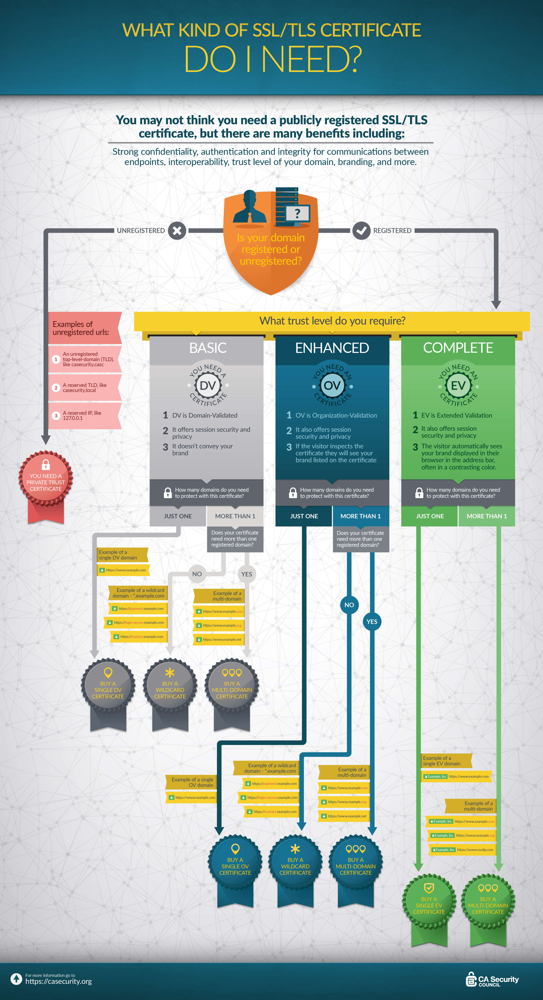

Seguridad en la web
HTTPS y certificados SSL
¿Qué es SSL/TLS?
Las siglas SSL (Secure Socket Layers) designan a una tecnología utilizada para cifrar y verificar el tráfico de datos en Internet. Aplicada en páginas web, asegura la comunicación entre el navegador y el servidor web. En especial, en el contexto del eCommerce y la banca online, donde se intercambian numerosos datos sensibles y confidenciales, es imprescindible implementar un certificado SSL o TSL (Transport Layer Security), su sucesor.
Los datos que se suelen proteger con un protocolo de encriptación SSL/TLS son, entre otros:
- Los datos de registro: nombre, dirección, dirección de correo electrónico, número de teléfono.
- Los datos de acceso: dirección de correo electrónico y contraseña.
- Información bancaria: número de tarjeta de crédito, cuenta bancaria.
- Formularios.
- Documentos que han subido los clientes.
El certificado SSL/TLS garantiza que la comunicación no se podrá leer ni manipular y que la información personal no caerá en las manos equivocadas.
¿Como pasar una página web a HTTPS?
Las páginas web nuevas pueden disponer de un certificado SSL/TLS desde el principio. Para webs ya existentes, el cambio a SSL/TLS tampoco demanda mucho esfuerzo. El primer paso es el mismo en ambos casos: adquirir un certificado SSL para el dominio.
Adquisición de un certificado SSL
El certificado SSL es una especie de prueba de identidad para una página web. La Autoridad de Certificación (CA) que los otorga se encarga de examinar la identidad y avala la veracidad de la información. Los certificados SSL se guardan en el servidor y se solicitan cada vez que un usuario visita una página web HTTPS. Existen diferentes tipos de certificados, diferenciados principalmente por el alcance de la autenticación que ofrecen:
-
Certificados con validación de dominio (Domain Validated Certificate) – gratuito y de pago
Estos son los certificados con el nivel más básico de autenticación. Para este certificado, la Autoridad de Certificación verifica únicamente si el solicitante es el propietario del dominio que quiere certificar. La información de la empresa no se comprueba, lo que implica ciertos riesgos. Esto hace que el proceso de autenticación no requiera mucho tiempo, por lo que se emite con rapidez y es el más barato de los tres tipos de certificados SSL, a veces, incluso completamente gratis.
Este tipo de certificado es adecuado para páginas web donde la credibilidad y la confianza de los usuarios juegan un papel secundario y no existe un riesgo de phishing, suplantación de identidad o fraude.
-
Certificados de validación de la organización o empresa (Organization Validated Certificate) – de pago
Este tipo de autenticación es más amplio y, por lo tanto, más seguro que el certificado de valoración de dominios. Además de verificar la propiedad del dominio, la Autoridad de Certificación verifica información corporativa relevante como, por ejemplo, su inscripción en el Registro Mercantil. Una vez comprobados, dichos datos son visibles para los visitantes de la web, lo que aumenta su confianza en el sitio y en la empresa. Como consecuencia del proceso de validación, este certificado es mucho más caro que el de dominio, pero ofrece un nivel más alto de seguridad.
Este certificado es adecuado para páginas web donde se llevan a cabo transacciones que implican el intercambio de datos no sensibles.
-
Certificados de validación extendida (Extended Validation Certificates) – de pago
Este es el certificado que ofrece el nivel más alto de autenticación. En contraste con el certificado de validación de empresa, en este la información de la empresa se analiza en detalle en función de los estrictos criterios de adjudicación. Este certificado solo puede ser otorgado por CA autorizados. Este exhaustivo examen de la empresa garantiza el más elevado nivel de seguridad y fortalece la credibilidad de la página. Como consecuencia, es el más caro de todos.
Este certificado es adecuado para páginas web que recopilan, por ejemplo, datos de cuentas bancarias o tarjetas de crédito, así como otros tipos de información sensible.
En la siguiente imagen se presenta una infografía de los distintos tipos de certificados:
Instalación y configuración
En el siguiente paso, se procede a la instalación del certificado SSL en el servidor. Muchos proveedores de servicios de alojamiento web se encargan de ello por sus clientes. Normalmente puede solicitarse en la sección de clientes y el proveedor se encarga del resto. La instalación variará dependiendo del proveedor, pero, por lo general, los proveedores o los organismos certificadores ponen a disposición del usuario las instrucciones correspondientes para su instalación. Que el protocolo se ejecute sin problemas dependerá principalmente de tres aspectos:
- Elección del certificado apropiado
- Cifrado correcto
- Configuración adecuada en el servidor
Errores comunes
Durante la implementación del protocolo pueden surgir algunos errores que pueden conducir a perder posiciones en el buscador o incluso a que la página deje de estar disponible.
Los administradores web que migran su proyecto a HTTPS deberían:
- Evitar los certificados expirados: un certificado SSL inválido genera un mensaje de advertencia en la ventana del navegador. Con esto, el objetivo de transmitir confianza y seguridad al usuario se pierde completamente.
- Configurar una redirección correcta: para evitar el contenido duplicado, los webmasters deben configurar la redirección 301. Esto evita que los buscadores reconozcan a la web HTTP y a la web HTTPS como dos páginas diferentes y que espere contenido diferente de cada una.
- Ajustar las cuentas publicitarias (Google AdWords, Bing Ads, etc.): si se incrusta contenido sin cifrar en una página web HTTPS (como imágenes, scripts, etc.), aparecerá un mensaje de advertencia que hará dudar a los usuarios. Esto resulta especialmente problemático con los anuncios, pues la mayoría de la publicidad suele entregarse sin cifrar, por lo que es necesario adaptarlos si se quiere garantizar la máxima seguridad.
- Actualización del mapa del sitio en XML: el mapa del sitio también debe actualizarse y guardarse en las Herramientas para Desarrolladores de Google.
- Comprobar los enlaces externos e internos: incluso cuando las redirecciones 301 evitan los enlaces defectuosos, todos los enlaces internos deben ser reemplazados una vez implementado el certificado HTTPS. Dependiendo de cómo se administre el contenido en el CMS, será necesario modificarlos a mano. Para los enlaces externos se debe intentar, en la medida de lo posible, cambiar aquellos enlaces principales (p. ej., a páginas con gran autoridad) a la dirección HTTPS.